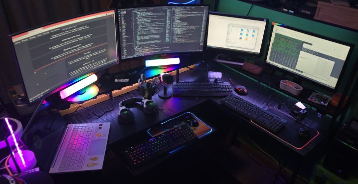
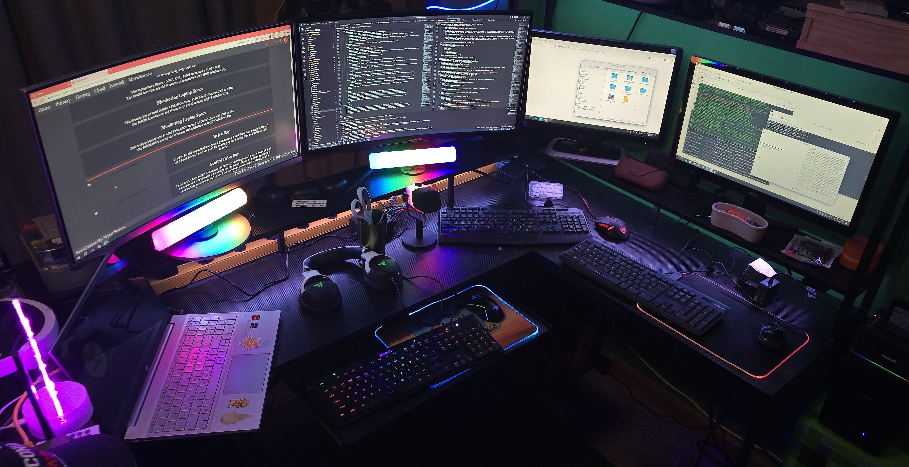

Desk Setup
I currently have a cool carbon fiber desk with some RGB accent lighting and a powerstrip built in.
I also have a whole bunch of keyboards and monitors set up for various systems.
It's basically my main hub for all my projects as almost all my tech is either setup on it, or attached to something on it.
Primary Desktop Use
My primary desktop is used for my everyday tasks, such as messaging, browsing, programming personal projects, or gaming.
I have it hooked up to two 27" curved screen monitors, one at 1440p and the other at 1080p, which is nice for testing my sites at both resolutions.
Primary Desktop Specs
This desktop has a Ryzen 7 5800x CPU, 32GB RAM, 8TB in HDDs, 1.25TB in SSDs, and an RTX 3060 for graphics.
I also have some USB expansions and am working on setting up an old 5.25" drive bay externally.